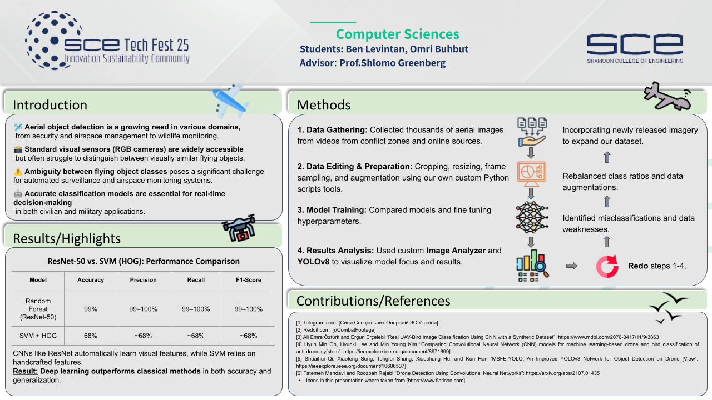

Aerial Object Classification
Hybrid ResNet50 + Random Forest pipeline for classifying flying objects from aerial imagery
Conference Poster
Presented at SCE Tech Fest 25 — Shamoon College of Engineering, Innovation Sustainability Community

Ben Levintan & Omri Buhbut · Advisor: Prof. Shlomo Greenberg · Computer Sciences Department
The Problem
How It Works
(2048D vectors)
ResNet50 Feature Extractor
The final classification layer of a pretrained ResNet50 is removed. The remaining network acts as a 2048-dimensional feature extractor — transforming each image into a rich numerical representation that captures deep visual patterns learned from ImageNet. No fine-tuning required.
Random Forest Classifier
The 2048D feature vector is fed into a Random Forest. Unlike end-to-end deep learning, this approach is interpretable, fast to train, and robust to overfitting. After comparing SVM, Decision Tree, and Random Forest — Random Forest was the clear winner in accuracy and stability.

Results
| Model | Accuracy | Precision | Recall | F1-Score |
|---|---|---|---|---|
| Random Forest (ResNet-50) | 99% | 99–100% | 99–100% | 99–100% |
| SVM + HOG | 68% | ~68% | ~68% | ~68% |
CNNs like ResNet automatically learn visual features directly from pixel data. SVM with HOG relies on handcrafted gradient features — fundamentally limited for complex aerial imagery where objects share similar silhouettes.
Dataset
Scale
Thousands of aerial images collected from conflict zone footage, online video sources, and public datasets. Cropped, resized to 224×224, and frame-sampled from video using custom Python scripts.
10 Balanced Classes
Dataset covers 10 object categories. Class ratios were rebalanced and augmented iteratively to address misclassification patterns identified during training.
Feature Vectors
Each image is transformed into a 2048-dimensional feature vector by the ResNet50 extractor. Train/test split: 80% / 20%.
Methodology
1. Data Gathering
Collected thousands of aerial images from videos and online sources
2. Data Editing
Cropping, resizing, frame sampling, augmentation using Python scripts
4. Results Analysis
Used custom Image Analyzer GUI and YOLOv8 to visualize results
3. Model Training
Compared models, fine-tuned hyperparameters
Iterative Loop: Each iteration refined the dataset based on where the model was misclassifying — rebalancing class ratios and adding targeted augmentations until accuracy plateaued.
Image Analyzer Tool
A custom Tkinter desktop GUI was built to interactively analyze test images against the trained model. Load any .pkl Random Forest model, point it at a folder of test images, and navigate through predictions one by one — with class probabilities displayed as a bar chart and the predicted class highlighted.
# ResNet50 as a feature extractor — remove final classification layer
self.feature_extractor = models.resnet50(weights=ResNet50_Weights.IMAGENET1K_V1)
self.feature_extractor = torch.nn.Sequential(
*list(self.feature_extractor.children())[:-1]
)
# Extract 2048-dimensional feature vector
with torch.no_grad():
features = self.feature_extractor(input_batch).squeeze().cpu().numpy()
# Classify with Random Forest
probabilities = self.model.predict_proba(features.reshape(1, -1))[0]Project Structure
| File | Role |
|---|---|
| forrest.py | Trains Random Forest on ResNet50 features, saves .pkl |
| forrest_analyzer.py | Tkinter GUI for interactive prediction visualization |
| RESnet.py | ResNet50 feature extractor (removes final layer) |
| resnet_image_analyzer.py | Prototype analyzer — earlier iteration |
Tech Stack
Academic Context
This project was submitted as part of the Computer Sciences curriculum and presented at the annual SCE Tech Fest innovation showcase.